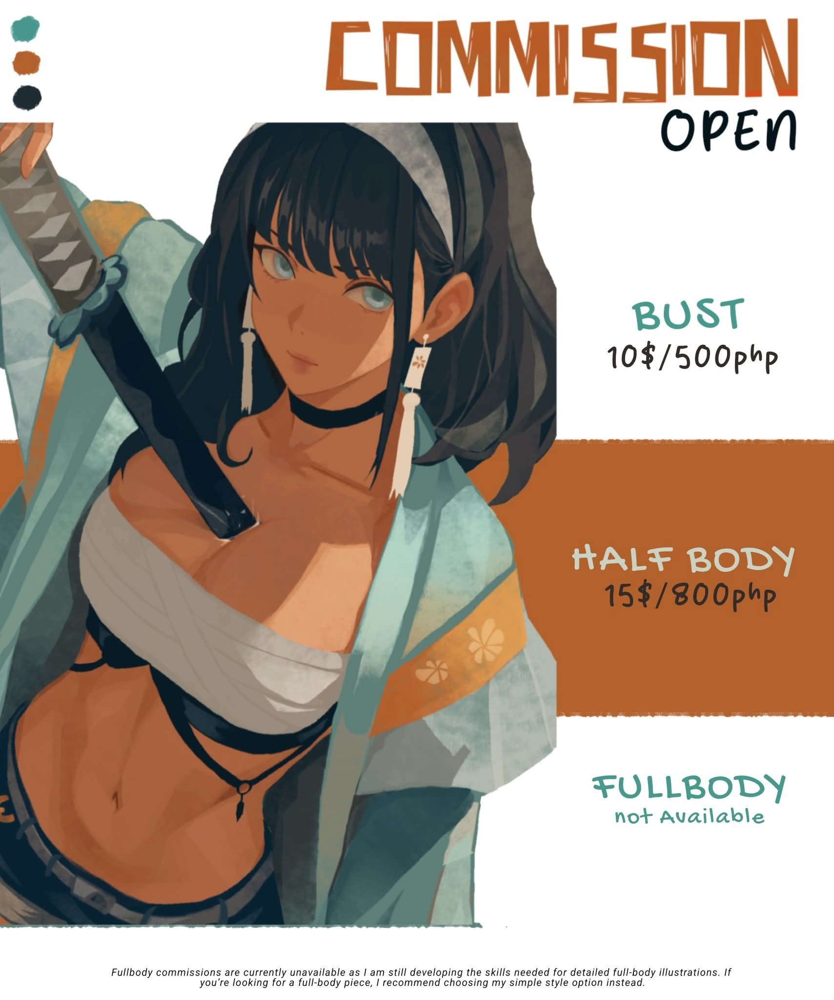

Our Creative Services
At NVERN, we offer a broad range of concept art services tailored to digital storytelling and visual development.
Character Design
We create memorable characters that fit into games, films, comics, and books — designed for personality and expression.
Environment Design
From cyberpunk cityscapes to medieval ruins, we craft immersive landscapes that tell their own stories.
Creature & Monster Art
Imaginative and terrifying, our creature designs push the limits of form and function.
Weapons & Props
We design functional gear, mystical artifacts, and unique items that reflect lore and purpose.
Storyboards & Visual Dev
We help plan the mood and tone of your projects through storyboard sequences and scene design.